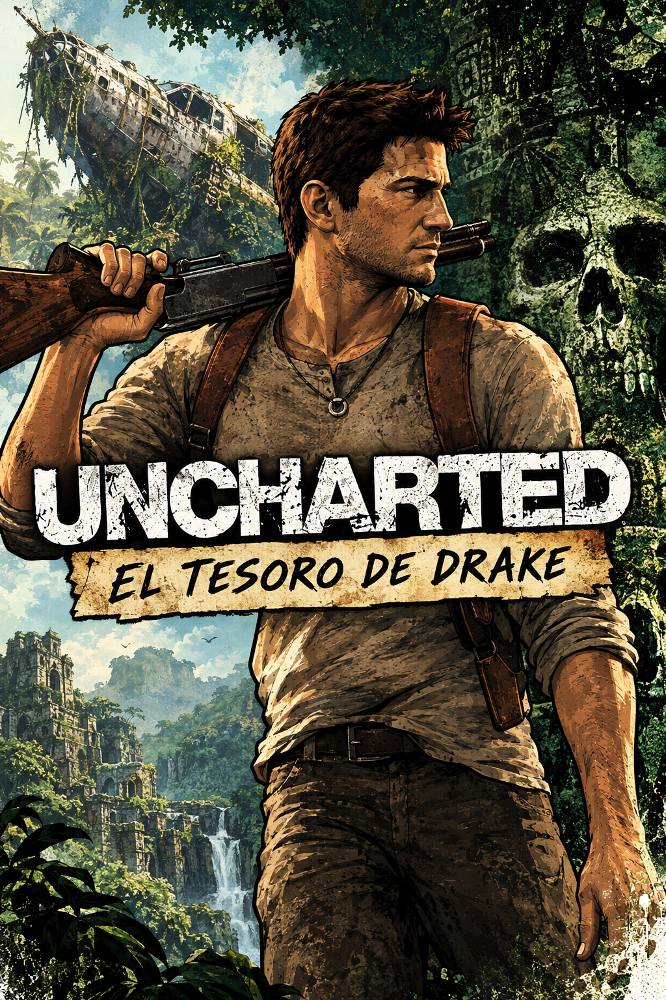

Uncharted: El tesoro de Drake
Gènere: Acció i aventura
Plataforma original: PlayStation 3 (no disponible en PC)
Preu: 14.99€
Valorció: 88/100
Descripció: Nathan Drake emprèn una aventura a la recerca del llegendari tresor El Dorado, acompanyat per Elena Fisher i Victor Sullivan. Combina exploració, tirotejos, plataformes i puzles en una aventura cinematogràfica per diferents llocs del món.